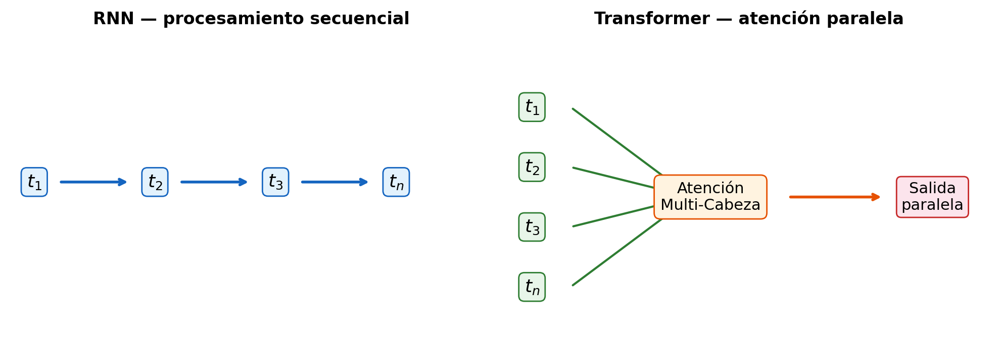
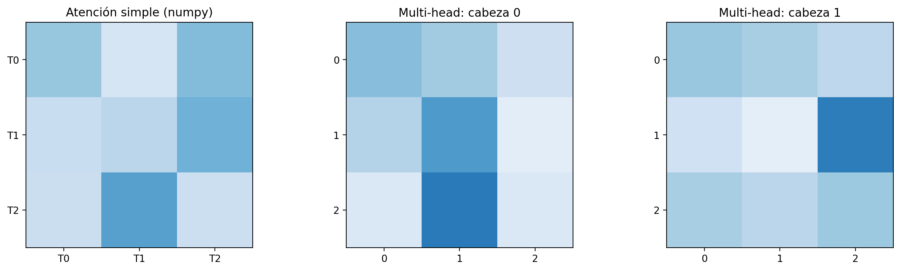
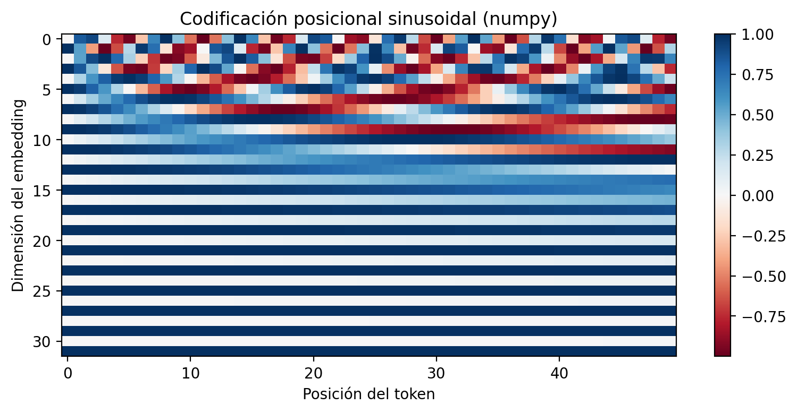
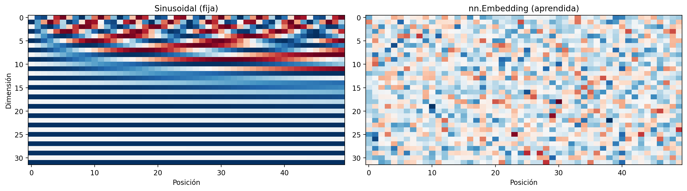

!pip install -q matplotlib01a — Arquitectura Transformer

Este tema forma parte del Bloque 1 — Fundamentos. Se recomienda seguir el orden: Transformer → LLMs → Embeddings → Vector DB.
import os
os.environ["TOKENIZERS_PARALLELISM"] = "false"
import warnings
warnings.filterwarnings("ignore")
import numpy as np
import matplotlib.pyplot as plt
import torch
import torch.nn as nn
import torch.nn.functional as F
plt.rcParams["figure.dpi"] = 100
print("Librerías cargadas correctamente.")Librerías cargadas correctamente.Arquitectura Transformer
El problema que resuelve
Antes de Transformer, los modelos secuenciales dominaban el procesamiento de lenguaje: RNN, LSTM, GRU. Estos modelos procesan tokens uno tras otro, lo que: - Impide la paralelización (cada token depende del anterior) - Sufre desvanecimiento de gradiente en secuencias largas - Dificulta capturar dependencias de largo alcance
La arquitectura Transformer (Vaswani et al., 2017) resolvió estos problemas introduciendo el mecanismo de atención como reemplazo de la recurrencia, permitiendo procesar todos los tokens en paralelo y modelar dependencias directas entre cualquier par de posiciones.

fig, (ax1, ax2) = plt.subplots(1, 2, figsize=(10, 3.5))
fig.patch.set_facecolor('white')
rnn_nodes = ['$t_1$', '$t_2$', '$t_3$', '$t_n$']
# RNN — procesamiento secuencial
ax1.set_title("RNN — procesamiento secuencial", fontsize=12, fontweight='bold')
ax1.axis('off')
x_positions = [0.05, 0.3, 0.55, 0.8]
for i, (label, x) in enumerate(zip(rnn_nodes, x_positions)):
ax1.text(x, 0.5, label, fontsize=13, ha='center', va='center',
bbox=dict(boxstyle='round,pad=0.3', facecolor='#e3f2fd', edgecolor='#1565c0'))
if i < len(rnn_nodes) - 1:
ax1.annotate('', xy=(x_positions[i+1] - 0.05, 0.5),
xytext=(x + 0.05, 0.5),
arrowprops=dict(arrowstyle='->', color='#1565c0', lw=2))
# Transformer — atención paralela
ax2.set_title("Transformer — atención paralela", fontsize=12, fontweight='bold')
ax2.axis('off')
y_positions = [0.75, 0.55, 0.35, 0.15]
for label, y in zip(rnn_nodes, y_positions):
ax2.text(0.05, y, label, fontsize=13, ha='center', va='center',
bbox=dict(boxstyle='round,pad=0.3', facecolor='#e8f5e9', edgecolor='#2e7d32'))
ax2.annotate('', xy=(0.38, 0.45), xytext=(0.13, y),
arrowprops=dict(arrowstyle='->', color='#2e7d32', lw=1.5))
ax2.text(0.42, 0.45, 'Atención\nMulti-Cabeza', fontsize=11, ha='center', va='center',
bbox=dict(boxstyle='round,pad=0.4', facecolor='#fff3e0', edgecolor='#e65100'))
ax2.annotate('', xy=(0.78, 0.45), xytext=(0.58, 0.45),
arrowprops=dict(arrowstyle='->', color='#e65100', lw=2))
ax2.text(0.88, 0.45, 'Salida\nparalela', fontsize=11, ha='center', va='center',
bbox=dict(boxstyle='round,pad=0.3', facecolor='#fce4ec', edgecolor='#c62828'))
plt.tight_layout()
plt.show()
Atención multi-cabeza (Multi-Head Attention)
El núcleo del Transformer es el mecanismo de scaled dot-product attention. Para cada token, se calculan tres vectores:
- Q (Query): qué información busca este token
- K (Key): qué información ofrece cada token
- V (Value): el contenido real de cada token
La atención se calcula como:
\[\text{Attention}(Q, K, V) = \text{softmax}\left(\frac{QK^T}{\sqrt{d_k}}\right)V\]
El producto \(Q·K^T\) mide la similitud entre cada par de tokens. El factor √d_k escala para evitar que los valores crezcan demasiado. La multi-cabeza ejecuta este proceso en paralelo con pesos distintos, permitiendo al modelo atender a diferentes relaciones simultáneamente (sintaxis, semántica, coreferencias…).

Scaled Dot-Product Attention — Low Level (numpy)
def scaled_dot_product_attention_numpy(Q, K, V):
"""Atención paso a paso con numpy. Muestra la matemática subyacente."""
d_k = K.shape[-1]
scores = np.matmul(Q, K.transpose(0, 2, 1))
scores = scores / np.sqrt(d_k)
weights = np.exp(scores) / np.sum(np.exp(scores), axis=-1, keepdims=True)
output = np.matmul(weights, V)
return output, weights
np.random.seed(42)
batch, seq_len, d_k = 1, 3, 4
Q = np.random.randn(batch, seq_len, d_k)
K = np.random.randn(batch, seq_len, d_k)
V = np.random.randn(batch, seq_len, d_k)
out_np, attn_np = scaled_dot_product_attention_numpy(Q, K, V)
print("Matriz de atención (numpy):")
print(np.round(attn_np[0], 3))
print("\nCada fila suma 1:", np.round(attn_np[0].sum(axis=1), 3))Matriz de atención (numpy):
[[0.393 0.168 0.439]
[0.231 0.283 0.486]
[0.225 0.559 0.216]]
Cada fila suma 1: [1. 1. 1.]Scaled Dot-Product Attention — High Level (PyTorch)
def scaled_dot_product_attention_torch(Q, K, V):
"""Atención paso a paso con PyTorch, equivalente a la versión numpy."""
d_k = K.shape[-1]
scores = torch.matmul(Q, K.transpose(-2, -1)) / torch.sqrt(torch.tensor(d_k, dtype=torch.float32))
weights = torch.softmax(scores, dim=-1)
output = torch.matmul(weights, V)
return output, weights
Qt = torch.from_numpy(Q)
Kt = torch.from_numpy(K)
Vt = torch.from_numpy(V)
out_th, attn_th = scaled_dot_product_attention_torch(Qt, Kt, Vt)
print("Matriz de atención (PyTorch):")
print(np.round(attn_th.numpy()[0], 3))
print(f"\n¿Resultados idénticos? {np.allclose(out_np, out_th.numpy(), atol=1e-6)}")Matriz de atención (PyTorch):
[[0.393 0.168 0.439]
[0.231 0.283 0.486]
[0.225 0.559 0.216]]
¿Resultados idénticos? TrueMulti-Head Attention — Low Level (numpy)
def multi_head_attention_numpy(Q, K, V, num_heads=2):
"""Multi-head atención desde cero: divide en cabezas, atiende, concatena, proyecta."""
batch, seq_len, d_model = Q.shape
d_k = d_model // num_heads
Q_heads = Q.reshape(batch, seq_len, num_heads, d_k).transpose(0, 2, 1, 3)
K_heads = K.reshape(batch, seq_len, num_heads, d_k).transpose(0, 2, 1, 3)
V_heads = V.reshape(batch, seq_len, num_heads, d_k).transpose(0, 2, 1, 3)
outputs, attn_weights = [], []
for h in range(num_heads):
scores = Q_heads[:, h] @ K_heads[:, h].swapaxes(-2, -1) / np.sqrt(d_k)
weights = np.exp(scores) / np.sum(np.exp(scores), axis=-1, keepdims=True)
outputs.append(weights @ V_heads[:, h])
attn_weights.append(weights)
concat = np.concatenate(outputs, axis=-1)
return concat, attn_weights
Q_mh = np.random.randn(1, 3, 8)
K_mh = np.random.randn(1, 3, 8)
V_mh = np.random.randn(1, 3, 8)
out_mh, attn_mh = multi_head_attention_numpy(Q_mh, K_mh, V_mh, num_heads=2)
print(f"Salida multi-head: {out_mh.shape}")
print(f"Cabeza 0 pesos:\n{np.round(attn_mh[0][0], 3)}")
print(f"Cabeza 1 pesos:\n{np.round(attn_mh[1][0], 3)}")
print(f"\nCada cabeza atiende de forma distinta (diferentes pesos).")Salida multi-head: (1, 3, 8)
Cabeza 0 pesos:
[[0.427 0.361 0.211]
[0.307 0.588 0.105]
[0.143 0.711 0.146]]
Cabeza 1 pesos:
[[0.384 0.34 0.277]
[0.201 0.099 0.7 ]
[0.34 0.282 0.377]]
Cada cabeza atiende de forma distinta (diferentes pesos).Multi-Head Attention — High Level (PyTorch)
embed_dim = 8
num_heads = 2
mha = nn.MultiheadAttention(embed_dim=embed_dim, num_heads=num_heads, batch_first=True)
Qt_mh = torch.from_numpy(Q_mh).float()
Kt_mh = torch.from_numpy(K_mh).float()
Vt_mh = torch.from_numpy(V_mh).float()
out_th_mh, attn_th_mh = mha(Qt_mh, Kt_mh, Vt_mh, need_weights=True)
print(f"Salida nn.MultiheadAttention: {out_th_mh.shape}")
print(f"Pesos de atención:\n{np.round(attn_th_mh.detach().numpy(), 3)}")
print(f"\nParámetros entrenables de la capa: {sum(p.numel() for p in mha.parameters())}")Salida nn.MultiheadAttention: torch.Size([1, 3, 8])
Pesos de atención:
[[[0.245 0.166 0.589]
[0.251 0.343 0.406]
[0.33 0.43 0.24 ]]]
Parámetros entrenables de la capa: 288Visualización de atención
fig, axes = plt.subplots(1, 3, figsize=(14, 4))
axes[0].imshow(attn_np[0], cmap="Blues", vmin=0, vmax=1)
axes[0].set_title("Atención simple (numpy)")
axes[0].set_xticks(range(seq_len)); axes[0].set_yticks(range(seq_len))
axes[0].set_xticklabels([f"T{i}" for i in range(seq_len)])
axes[0].set_yticklabels([f"T{i}" for i in range(seq_len)])
axes[1].imshow(attn_mh[0][0], cmap="Blues", vmin=0, vmax=1)
axes[1].set_title("Multi-head: cabeza 0")
axes[1].set_xticks(range(seq_len)); axes[1].set_yticks(range(seq_len))
axes[2].imshow(attn_mh[1][0], cmap="Blues", vmin=0, vmax=1)
axes[2].set_title("Multi-head: cabeza 1")
axes[2].set_xticks(range(seq_len)); axes[2].set_yticks(range(seq_len))
plt.tight_layout()
plt.show()
plt.close(fig)
Codificación posicional
La atención es permutation-invariant: si cambiamos el orden de los tokens, el resultado es el mismo. Para inyectar información de posición, el Transformer añade un vector de codificación posicional a cada embedding de token.
La codificación posicional sinusoidal usa frecuencias diferentes para cada dimensión:
\[PE_{(pos, 2i)} = \sin(pos / 10000^{2i/d_{model}})\] \[PE_{(pos, 2i+1)} = \cos(pos / 10000^{2i/d_{model}})\]
Codificación posicional — Low Level (numpy)
def positional_encoding_numpy(seq_len, d_model):
"""Codificación posicional sinusoidal desde cero."""
pos = np.arange(seq_len)[:, np.newaxis]
i = np.arange(d_model)[np.newaxis, :]
angle_rates = 1 / np.power(10000, (2 * (i // 2)) / d_model)
pe = np.zeros((seq_len, d_model))
pe[:, 0::2] = np.sin(pos * angle_rates[:, 0::2])
pe[:, 1::2] = np.cos(pos * angle_rates[:, 1::2])
return pe
pe_np = positional_encoding_numpy(50, 32)
fig, ax = plt.subplots(figsize=(8, 4))
im = ax.imshow(pe_np.T, cmap="RdBu", aspect="auto")
ax.set_xlabel("Posición del token")
ax.set_ylabel("Dimensión del embedding")
ax.set_title("Codificación posicional sinusoidal (numpy)")
plt.colorbar(im, ax=ax)
plt.tight_layout()
plt.show()
plt.close(fig)
Codificación posicional — High Level (PyTorch)
vocab_size = 50
d_model = 32
pos_embedding = nn.Embedding(vocab_size, d_model)
posiciones = torch.arange(vocab_size)
pe_aprendida = pos_embedding(posiciones).detach().numpy()
fig, axes = plt.subplots(1, 2, figsize=(14, 4))
axes[0].imshow(pe_np.T, cmap="RdBu", aspect="auto")
axes[0].set_title("Sinusoidal (fija)")
axes[0].set_xlabel("Posición"); axes[0].set_ylabel("Dimensión")
axes[1].imshow(pe_aprendida.T, cmap="RdBu", aspect="auto")
axes[1].set_title("nn.Embedding (aprendida)")
axes[1].set_xlabel("Posición")
plt.tight_layout()
plt.show()
plt.close(fig)
print("La versión aprendida se adapta a los datos; la sinusoidal es fija pero extrapola a secuencias más largas.")
La versión aprendida se adapta a los datos; la sinusoidal es fija pero extrapola a secuencias más largas.Variantes de la arquitectura
| Variante | Arquitectura | Ejemplos | Uso principal |
|---|---|---|---|
| Encoder-only | Solo encoder (atención bidireccional) | BERT, RoBERTa | Clasificación, NER, embeddings |
| Decoder-only | Solo decoder (atención causal/masked) | GPT, Llama, Qwen, Gemma, DeepSeek | Generación de texto, chat |
| Encoder-decoder | Encoder + decoder con cross-attention | T5, BART | Traducción, resumen, QA |
graph LR
subgraph "Encoder-only (BERT)"
A[Entrada] --> B[Encoder<br/>Bidireccional]
B --> C[Clasificación / Embeddings]
end
subgraph "Decoder-only (GPT)"
D[Entrada] --> E[Decoder<br/>Causal]
E --> F[Texto generado]
end
subgraph "Encoder-Decoder (T5)"
G[Entrada] --> H[Encoder]
H --> I[Decoder]
I --> J[Salida]
end
ImportantLectura obligatoria
Vaswani, A. et al. (2017). Attention is All You Need. NeurIPS.
Leer secciones 3-5: Scaled Dot-Product Attention, Multi-Head Attention, Positional Encoding y el resumen de la arquitectura completa.
Continúa con 01b-llms.qmd — Grandes Modelos de Lenguaje e inferencia.